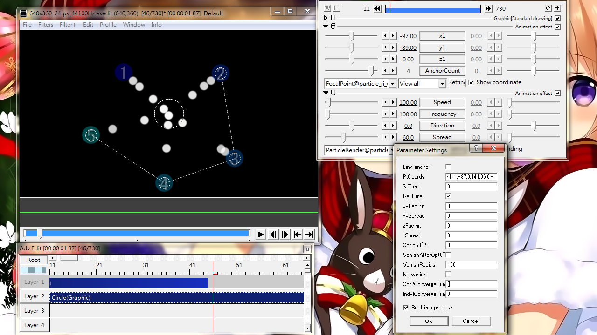
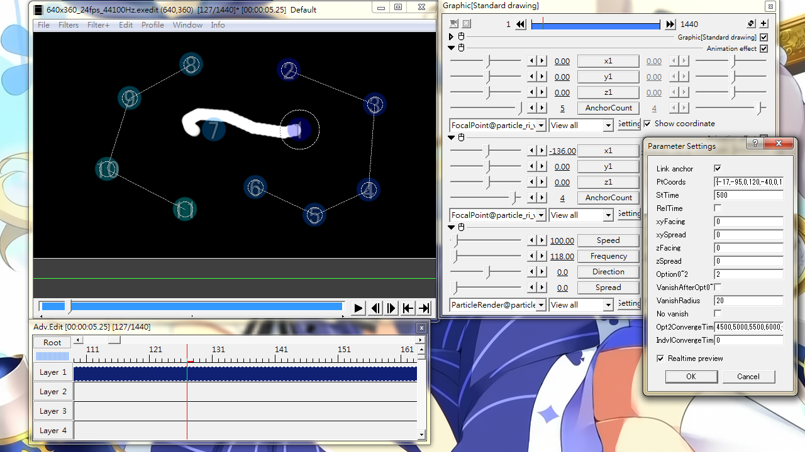
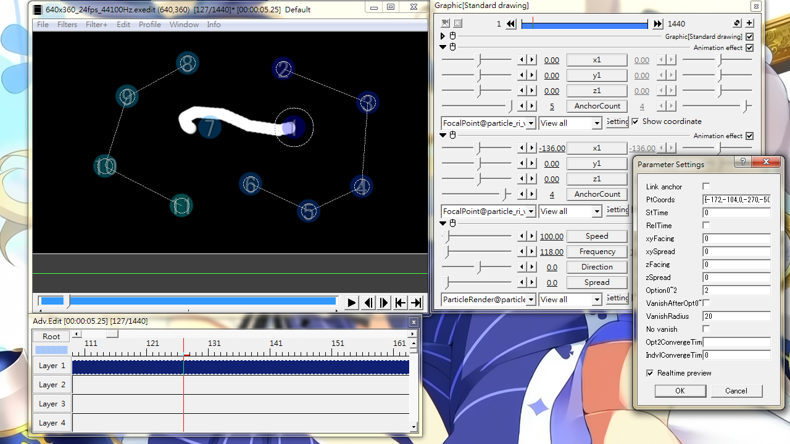

Fig06A: setting panel for FocalPoint@particle_ri_ver3

Fig06B: Settings for the first attached FocalPoint effect when using Option0~2=2 and using more than 6 anchors. Note the Opt2ConvergeTime field contains 11 numbers(From 1000 to 6000 with step 500).

Fig06C: Settings for the second attached FocalPoint effect, while the first one is shown on Fig06B. Note that this one only defines extra anchors. The timing values all resides in the first FocalPoint effect.
FocalPoint
Make particles move towards user-defined anchors.
Sliders
x1
x-Coordinate for the first anchor point (labeled as ➀)
y1
y-Coordinate for the first anchor point (labeled as ➀)
z1
z-Coordinate for the first anchor point (labeled as ➀)
AnchorCount
Adding a maximum of 5 extra anchor points.
The extra anchors can be dragged around.
Setting it to a negative number will remove all anchors.
Check box
Show coordinate
Show the anchor points as ➀、➁、➂. See Fig06 for reference.
Setting dialog
Link anchor
Joining anchors to subsequent FocalPoint effects, hence increasing the maximum usable anchors.
When multiple FocalPoint effects are attached to the same object, Option0~2 and xyFacing will use the first FocalPoint effect settings.
See Fig06B for example
PtCoords
Coordinates of anchor points in numbers.
StTime
Converge Starting Time. A delay time after which the particles would move towards anchors.
RelTime
Relative time (for StTime).
Unchecked: The start of object is treated as zero time. Suggested for Option0~2=2.
Checked: Particle-wise, the moment a particle is emitted is time zero.
xyFacing
A deviation angle away from anchor point(s). Set this to 180 and the particles will move AWAY from anchors.
xySpread
An angle of spread when particles move towards anchors.
zFacing
Similar to xyFacing but for the depth component.
zSpread
Similar to xySpread but for the depth component.
Option0~2
Tweak how particles should move to anchors.
0: a particle will move towards a randomly chosen anchor.
1: a particle will move to the nearest anchor.
2: particles will move towards anchors one-by-one in order. Requires valid setting in StTime and Opt2ConvergeTime, or it will be treated the same as =0.
See Opt2ConvergeTime below for details.
VanishAfterOpt0~1
A particle shall vanish within a certain radius from the target anchor. Effective only when Option0~2 is 0 or 1.
VanishRadius
To be used with VanishAfterOpt0~1. Defines the size of a "black hole" area around each anchor. Note that this black hole area has no effect on particle that is supposed to approach another anchor.
No vanish
Particles falling into the black hole area shall not vanish, but stop still instead.
Opt2ConvergeTime
A required setting when Option0~2 is 2
It defines the timing when particles should move towards the next anchor.
Consists of a number series where subsequent number should be larger than or equal to the previous one, and the first number should be larger than StTime.
Time in milliseconds.
Example: StTime=1000, Opt2ConvergeTime= {3000,5000,7000} for 3 anchors
When linking anchors, enter ALL timing values into the FIRST attached FocalPoint effect panel